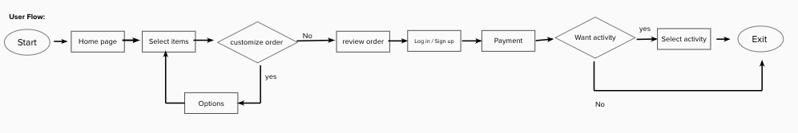

Waiting in line boredom Over D Cafe
This is my first project in UX immersive program by Misk academy. The goal from this project is to solve the waiting problem in a cafe and deliver simple prototype.
As we all know, waiting in line for a long time is boring and annoying. The amount of time individuals spend waiting in lines, as well as how they feel while waiting, has a massive effect on people. Some individuals spend many years of their lives waiting in line to get served. Waiting in line is a common scenario in our daily life that needs our attention in order to reduce the waiting time.
Research goal
The main objective here is to know the user needs, what they want, what they do during waiting time in order to solve the waiting problem.
Interview
To learn more about the problem we conducted interview with 13 peoples. We interviewed them about their waiting experience , what they do during wating, what can help to make the process faster.
What people’s said
here we used affinity mapping that help us to sort and cluster the answers into organizeed group. that helped us find patterns of thinking. Also, show us where the majority of people's minds are focused.

What we found
from the answers we reached to : 1- Most people feel bored and spend time using their phones while they wait 2- The cafe does not use any technical way to make the process easier
Problem
cafe customers need to wait for a long time in the cafe to get served. Our solutions should provide the customers with a better buying experience.
Solution
Create an app for cafe customers that will allow them to place an order without waiting in line for a long time.
User Flow
The user flow takes the user from the start point step by step to the final action to achieve the goal. We define the path the user will take.

Reflection
This project was completed in a limited time, and the main goal of the project is to know the user's needs and provide a simple design (wireframe) to solve the problem. This project taught me about the procedure and how long it takes to find the best solution. If I have more time, I will test and improve the design, and deliver the final prototype.